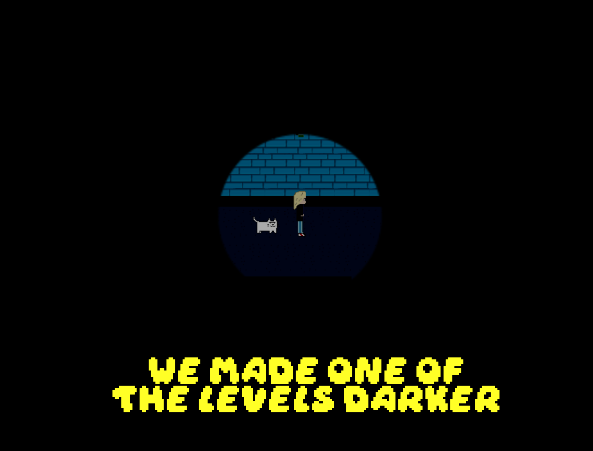
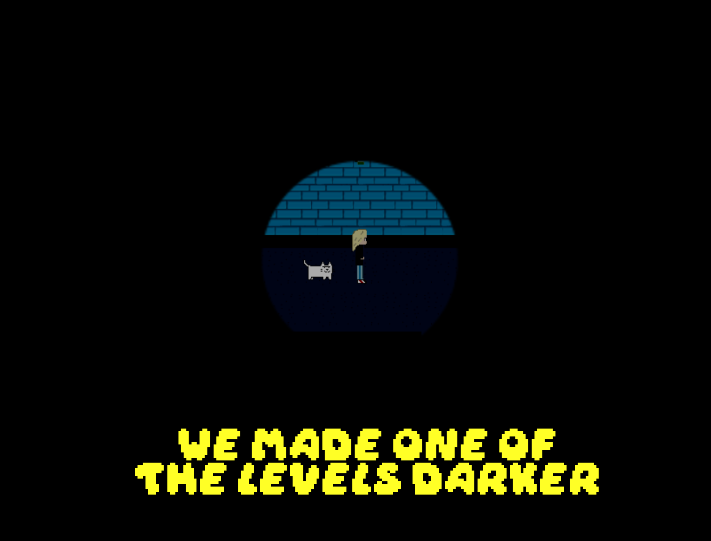
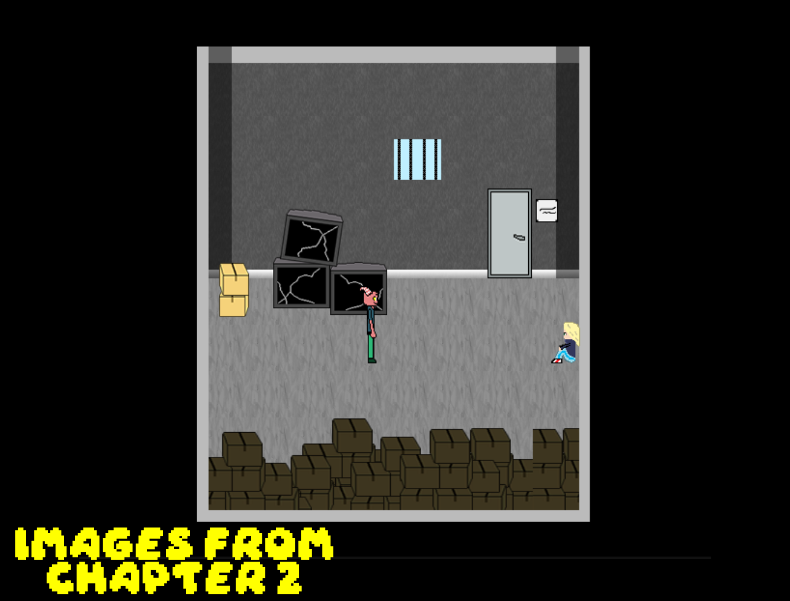
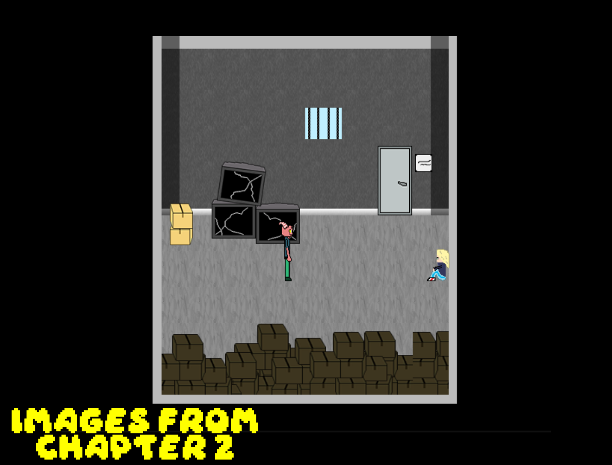

üóì April 18, 2025
After the release of the first demo version, we released a second demo with new mechanics on the Gamejolt platform. This demo included Chapter 1. After that, we started the development of Chapter 2 without slowing down. We realized that some of the graphical improvements we made in Chapter 2 were much better. That's why we made a lot of graphical improvements to Chapter 1 near the end of the development of Chapter 2. We've reinstated the punching mechanic from the second demo we recently released, and there are no more sections in the game where the player can punch at will. It will continue to be in the game as a feature that can only be used when necessary. We also improved and changed for the better some sequences in Chapter 1 that we realized needed to be changed or made better. You can take a look at the new Chapter 1 and Chapter 2 images.
— lyzerfiction
üì∏ Click to see images
 

 
